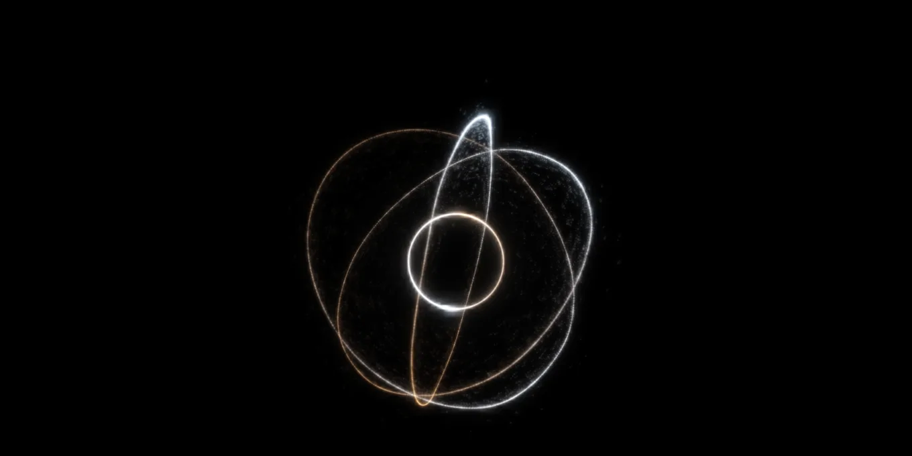
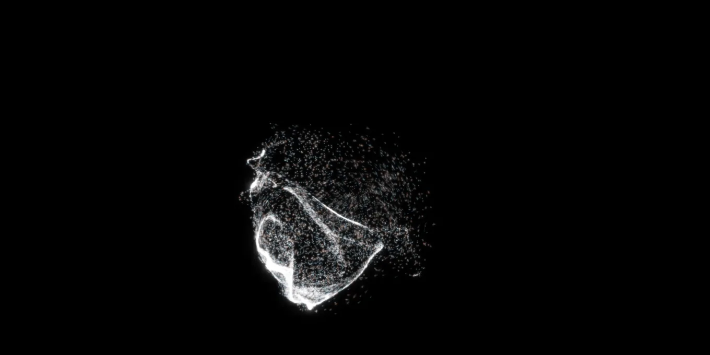
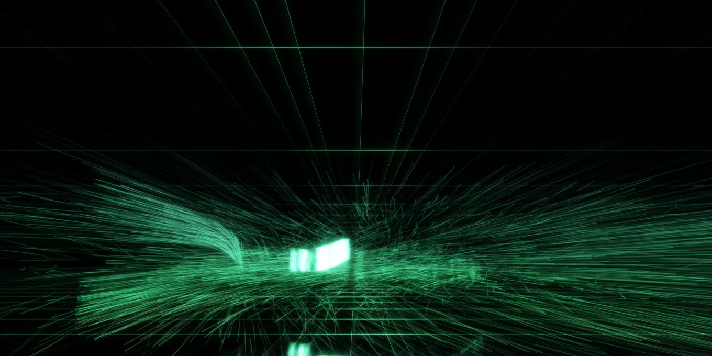

Flux
Reach in and stir a floating cloud of particles. A zero-dependency WebGL2 + WebXR particle field with three forms: Gradient, Black Hole and Aurora.
Project Overview
Reach into a floating cloud of particles and stir it. When your hand stops, the cloud keeps turning and slowly settles. The whole piece is a single HTML file: raw WebGL2 plus the WebXR Device API, with no framework and no CDN. On a laptop it is a mouse-driven canvas; in a headset you stir it with your bare hands.
Three Forms
Gradient hands the same particles to six pieces of mathematics in turn: divergence-free curl noise, the two wings of the Lorenz attractor, the pairwise-linked circles of the Hopf fibration, phyllotaxis that splits into spirals once the angle leaves the golden angle, spherical Chladni figures where sand settles on the nodal lines, and a galactic density wave where crowded ellipses make the arms. What changes is the source of the force, not a parameter, so the particles flow from one order into the next.
Black Hole has an accretion disc with Keplerian rotation, an event horizon that swallows particles, Doppler beaming, a photon ring and the secondary image of gravitational lensing. You can push matter over the horizon by hand.
Aurora sends three curtains flowing towards you through the dark, coloured by real emission altitude: magenta N₂ at the hem, oxygen's 557.7 nm green, then blue-violet fading upwards. Make a fist to slow it down.
How It's Built
Positions, velocities and trail history live in float textures that ping-pong on the GPU. The simulation is computed once and shared by both eyes. The velocity field is curl noise, so it is divergence-free and needs no pressure solve. The hand stirs the field with a cross product rather than a push, so particles keep swirling after the hand has passed. Rendering is additive into RGBA16F, then a mip-chain bloom and an exponential tonemap keep dense areas from clipping to white.
Lessons from XR
Runtimes without floor tracking report the local-floor origin at head height, so nothing may be placed at hard-coded world heights. Fist gestures are computed from joint positions rather than the squeeze event, which some runtimes also fire for a fist. Trail length is decoupled from frame rate, so a piece tuned at 240 fps on a desktop looks the same at 72 Hz in a headset. Bloom samples are clamped per eye so light cannot leak between them.
Gallery


